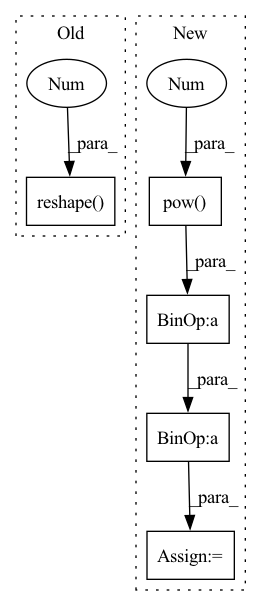

Pattern ID :28525

Before Change
cum_std = (cum_var + eps).sqrt() // B, T
cum_mean = cum_mean.reshape(batch_size * n_channels, 1, n_frames)
cum_std = cum_std.reshape(batch_size * n_channels, 1, n_frames)
x = (input - cum_mean) / cum_std
if n_dim == 4:
After Change
entry_count = entry_count.expand_as(cumulative_sum) // [1, T] => [B, T]
cumulative_mean = cumulative_sum / entry_count // [B, T]
cumulative_var = (cumulative_pow_sum - 2 * cumulative_mean * cumulative_sum) / entry_count + cumulative_mean.pow(2) // [B, T]
cumulative_std = torch.sqrt(cumulative_var + EPSILON) // [B, T]
cumulative_mean = cumulative_mean.reshape(batch_size * num_channels, 1, num_frames)
cumulative_std = cumulative_std.reshape(batch_size * num_channels, 1, num_frames)
In pattern: SUPERPATTERN
Frequency: 3
Non-data size: 5
Instances
Fragment ID: 84389526
Project Name: haoxiangsnr/fullsubnet
Commit Name: 321920989a4aa255158770213e814befc8f94f27
Time: 2021-02-08
Author: haoxiangsnr@gmail.com
File Name: audio_zen/model/base_model.py
M Class Name: BaseModel
N Class Name: BaseModel
M Method Name: cumulative_layer_norm(1)
N Method Name: cumulative_layer_norm(1)
M Parent Class: nn.Module
N Parent Class: nn.Module
M File Name: audio_zen/model/base_model.py
N File Name: audio_zen/model/base_model.py
M Start Line: 225
M End Line: 261
N Start Line: 276
N End Line: 304
'>
Before Change
covariance_matrix=torch.eye(self.model_config.latent_dim).to(x.device),
)
logpxz = self._log_p_xz(recon_x.reshape(x.shape[0], -1), x, zK) // log p(x, z_K)
logrhoK = -0.5 * torch.pow(rhoK, 2).sum(dim=-1) // log p(\rho_K)
logp = logpxz + logrhoK
After Change
logpx_given_z = self._log_p_x_given_z(recon_x, x) // log p(x|z_K)
log_zk = -0.5 * torch.pow(zK, 2).sum(dim=-1) // log p(\z_K)
logrhoK = -0.5 * torch.pow(rhoK, 2).sum(dim=-1) // log p(\rho_K)
logp = logpx_given_z + logrhoK + log_zk
logq = -0.5 * log_var.sum(
dim=-1
'>
Fragment ID: 84389557
Project Name: clementchadebec/benchmark_vae
Commit Name: a1a96c209d3b56f1c72d0409234169cf0b1c1e79
Time: 2022-08-20
Author: 47564971+clementchadebec@users.noreply.github.com
File Name: src/pythae/models/hvae/hvae_model.py
M Class Name: HVAE
N Class Name: HVAE
M Method Name: loss_function(7)
N Method Name: loss_function(7)
M Parent Class: VAE
N Parent Class: VAE
M File Name: src/pythae/models/hvae/hvae_model.py
N File Name: src/pythae/models/hvae/hvae_model.py
M Start Line: 132
M End Line: 143
N Start Line: 138
N End Line: 150
'>
Before Change
// todo: is clamp really necessary?
log_std = self.std_clamp(log_std)
std = log_std.exp()
m = MultivariateNormal(mean.reshape(-1), torch.diag(std.reshape(-1)))
action = m.sample()
action = action.reshape(mean.shape)
After Change
action = action_base.tanh()
// According to "Soft Actor-Critic" (Haarnoja et. al) Appendix C
action_bound_compensation = torch.log(1. - action.tanh().pow(2) + 1e-6)
action_bound_compensation = action_bound_compensation.sum(dim=-1, keepdim=True)
log_prob.sub_(action_bound_compensation)
return action, log_prob
'>
Fragment ID: 84389600
Project Name: tmdt-buw/karolos
Commit Name: e8ce439013ace3e3e9647de55ed22ddf38f35396
Time: 2020-04-23
Author: scheiderer@uni-wuppertal.de
File Name: agents/nnfactory/sac.py
M Class Name: Policy
N Class Name: Policy
M Method Name: forward(3)
N Method Name: forward(3)
M Parent Class: nn.Module
N Parent Class: nn.Module
M File Name: agents/nnfactory/sac.py
N File Name: agents/nnfactory/sac.py
M Start Line: 103
M End Line: 115
N Start Line: 104
N End Line: 123